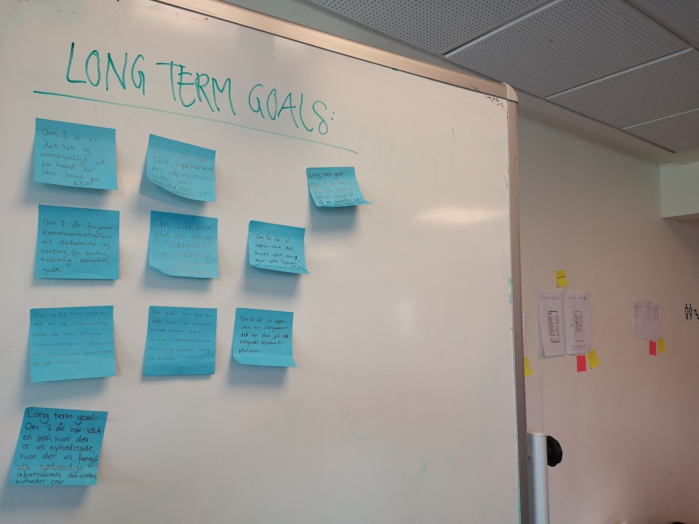
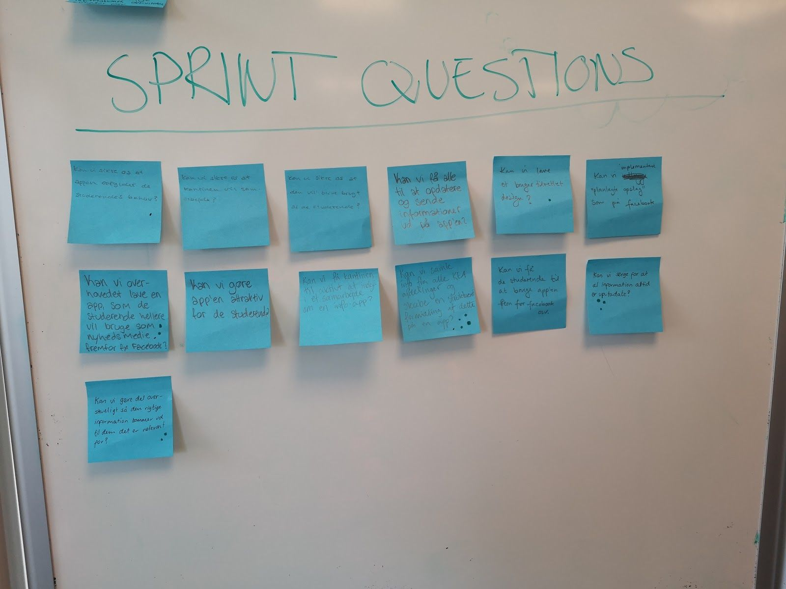
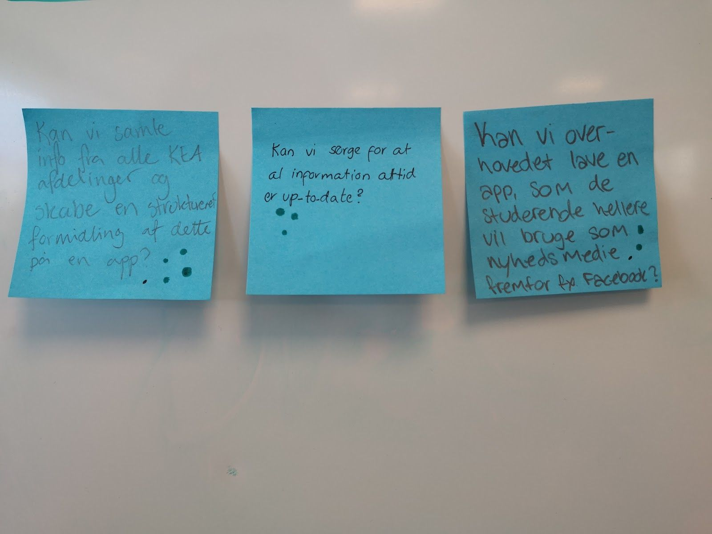
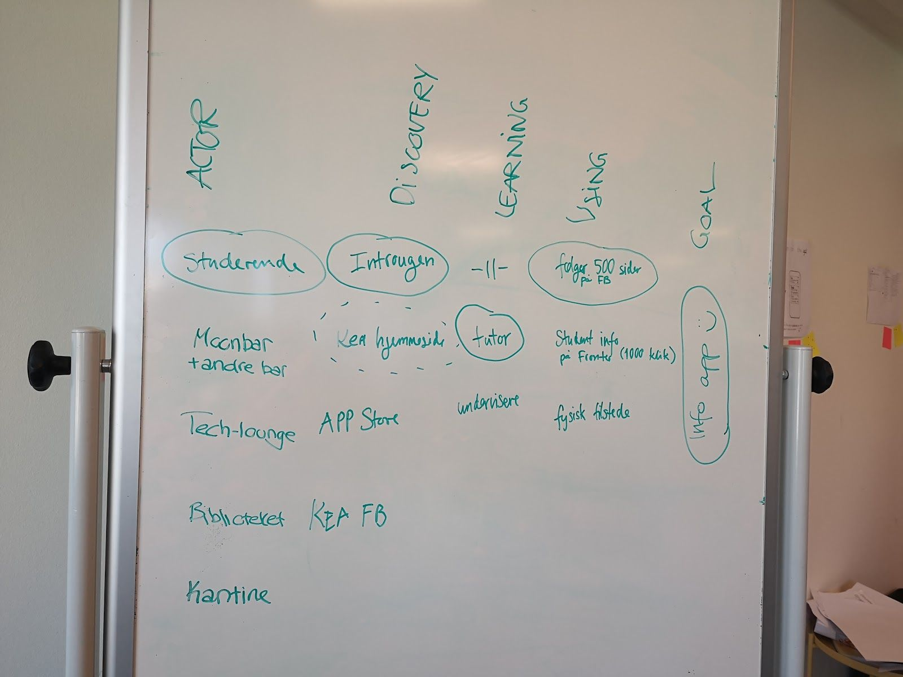
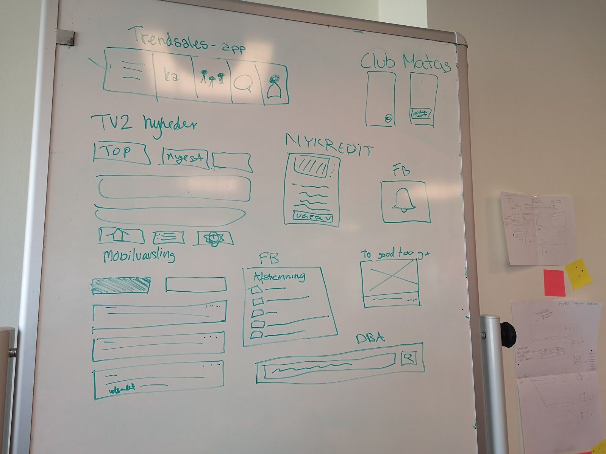
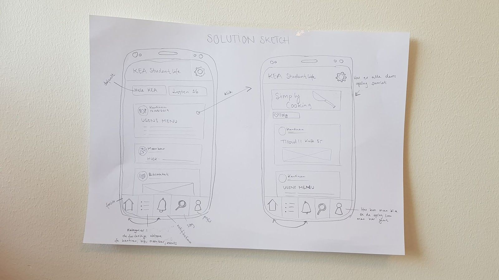
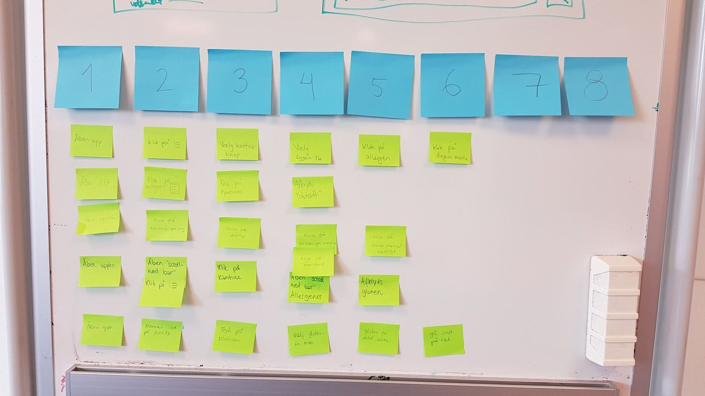

I dette projekt har vi designet en app til de studerende på KEA. Vi har arbejdet i grupper efter Design Sprint og til sidst i forløbet har vi pitchet vores app for de andre studerende på holdet.

Med øvelsen "note and vote" har vi fundet et longterm goal, som efterfølgende er blevet specificeret til: "Om 2 år har KEA implimenteret en informations app, hvor alle ikke undervisningsrelaterede aktører kan opdaterer med relevante nyheder og opslag dagligt. App'en vil blive introduceret i introugen på 1. semester for de studerende."

Med øvelsen "note and vote" har vi fundet sprint questions.

Vores 3 udvalgte sprint questions, som fik flest stemmer.

Vores map med aktører udarbejdet på baggrund af vore longterm goal sprint questions og research.
Dag 2: Sketch og decide

Vi startede dage med at lave lightning demos, hvor vi efterfølgende fremlagde de bedste idéer for hinanden.

Efter artmuseum og heatmap, valgte vi overstående idé.

Storyboard. Vi vlagte følgende story: 1) Åben app, 2) Klik på kategori, 3) Tryk på kantinen, 4) Vælg placering, 5) Vælg Lygten 16, 6) Afkryds vegetarisk og 7) Vegetarisk mad vises.